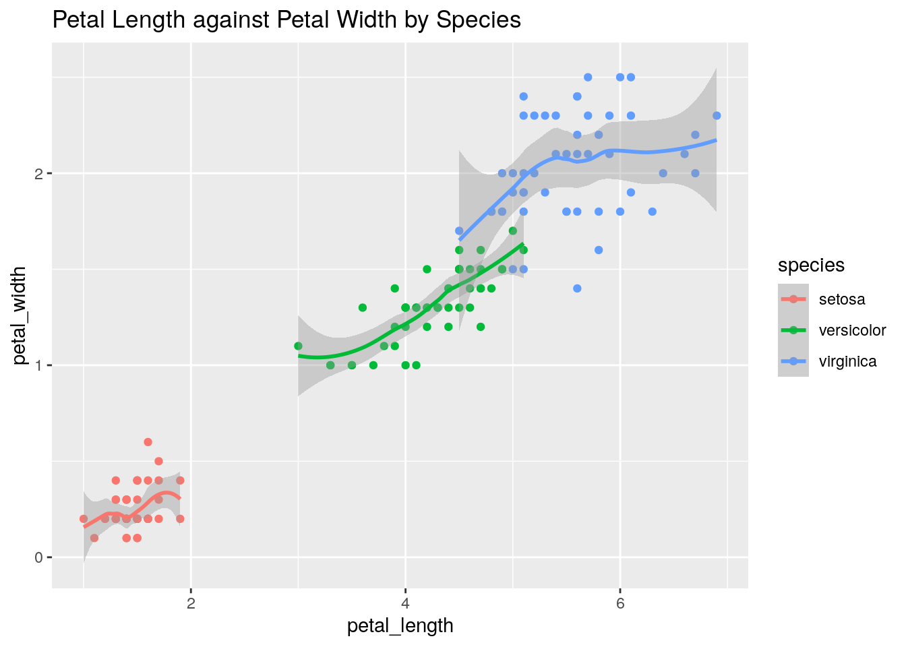
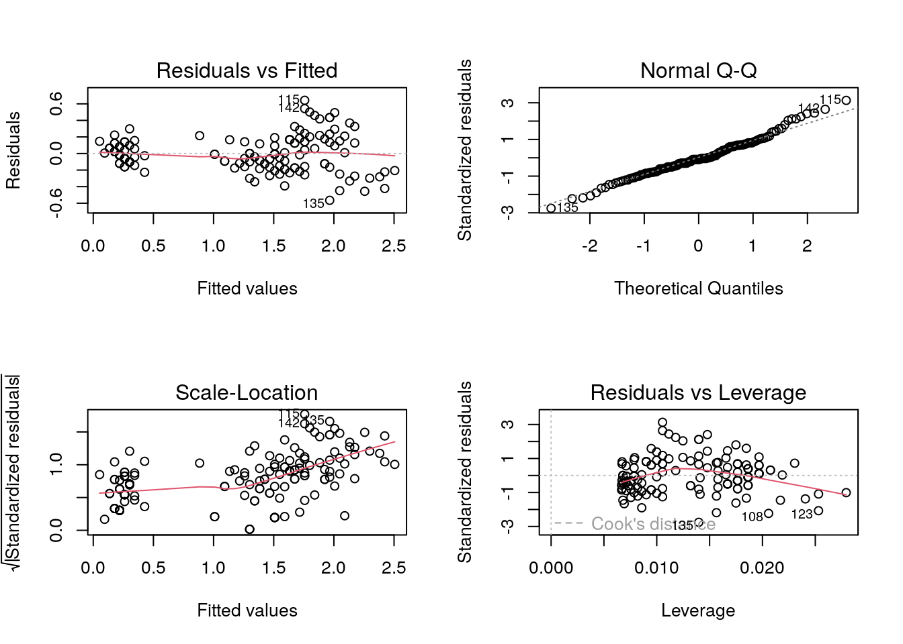

library(knitr)
library(tidyverse)
data(iris)
iris = iris |>
rename_with(~ tolower(gsub(".", "_", .x, fixed = TRUE)))Linear Regression
Iris Dataset
We will demonstrate how to fit a linear regression model to the iris dataset.
First we will load the data.
Next, we will visualise the data.

Regression
Next we will fit a linear regression model.
Call:
lm(formula = petal_width ~ petal_length, data = iris)
Residuals:
Min 1Q Median 3Q Max
-0.56515 -0.12358 -0.01898 0.13288 0.64272
Coefficients:
Estimate Std. Error t value Pr(>|t|)
(Intercept) -0.363076 0.039762 -9.131 4.7e-16 ***
petal_length 0.415755 0.009582 43.387 < 2e-16 ***
---
Signif. codes: 0 '***' 0.001 '**' 0.01 '*' 0.05 '.' 0.1 ' ' 1
Residual standard error: 0.2065 on 148 degrees of freedom
Multiple R-squared: 0.9271, Adjusted R-squared: 0.9266
F-statistic: 1882 on 1 and 148 DF, p-value: < 2.2e-16Next, we will view some diagnostics.

Session Information
R version 4.2.1 (2022-06-23)
Platform: x86_64-pc-linux-gnu (64-bit)
Running under: Ubuntu 20.04.5 LTS
Matrix products: default
BLAS: /usr/lib/x86_64-linux-gnu/blas/libblas.so.3.9.0
LAPACK: /usr/lib/x86_64-linux-gnu/lapack/liblapack.so.3.9.0
locale:
[1] LC_CTYPE=en_US.UTF-8 LC_NUMERIC=C
[3] LC_TIME=en_US.UTF-8 LC_COLLATE=en_US.UTF-8
[5] LC_MONETARY=en_US.UTF-8 LC_MESSAGES=en_US.UTF-8
[7] LC_PAPER=en_US.UTF-8 LC_NAME=C
[9] LC_ADDRESS=C LC_TELEPHONE=C
[11] LC_MEASUREMENT=en_US.UTF-8 LC_IDENTIFICATION=C
attached base packages:
[1] stats graphics grDevices utils datasets methods base
other attached packages:
[1] forcats_0.5.2 stringr_1.4.1 dplyr_1.0.10 purrr_0.3.5
[5] readr_2.1.3 tidyr_1.2.1 tibble_3.1.8 ggplot2_3.3.6
[9] tidyverse_1.3.2 knitr_1.40
loaded via a namespace (and not attached):
[1] tidyselect_1.2.0 xfun_0.34 haven_2.5.1
[4] gargle_1.2.1 colorspace_2.0-3 vctrs_0.5.0
[7] generics_0.1.3 htmltools_0.5.3 yaml_2.3.6
[10] utf8_1.2.2 rlang_1.0.6 pillar_1.8.1
[13] withr_2.5.0 glue_1.6.2 DBI_1.1.3
[16] dbplyr_2.2.1 modelr_0.1.9 readxl_1.4.1
[19] lifecycle_1.0.3 munsell_0.5.0 gtable_0.3.1
[22] cellranger_1.1.0 rvest_1.0.3 htmlwidgets_1.5.4
[25] evaluate_0.17 tzdb_0.3.0 fastmap_1.1.0
[28] fansi_1.0.3 broom_1.0.1 backports_1.4.1
[31] scales_1.2.1 googlesheets4_1.0.1 jsonlite_1.8.3
[34] fs_1.5.2 hms_1.1.2 digest_0.6.30
[37] stringi_1.7.8 grid_4.2.1 cli_3.4.1
[40] tools_4.2.1 magrittr_2.0.3 crayon_1.5.2
[43] pkgconfig_2.0.3 ellipsis_0.3.2 xml2_1.3.3
[46] reprex_2.0.2 googledrive_2.0.0 lubridate_1.8.0
[49] assertthat_0.2.1 rmarkdown_2.17 httr_1.4.4
[52] rstudioapi_0.14 R6_2.5.1 compiler_4.2.1